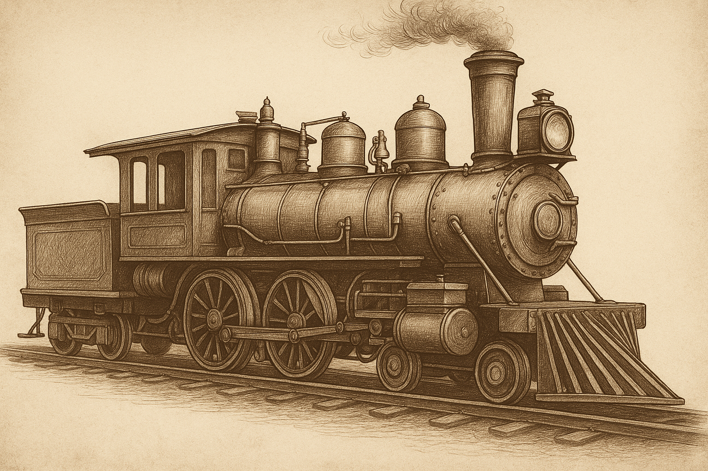

Railroads radically altered the U.S. economy and society, linking markets and accelerating westward expansion.
The expansion of railroads had profound economic and social effects on the United States. Economically, it enabled large-scale transportation of goods, reduced travel times, and opened access to distant markets. This development allowed manufacturers and farmers to expand their operations nationally, encouraging regional specialization and stimulating economic interdependence between the North, South, and West. Railroads played a central role in creating a truly national economy, transforming local producers into national suppliers. The rise of industries such as steel, coal, and lumber were directly tied to the expansion of rail infrastructure, further amplifying industrial growth in the post-Civil War period.¹
Socially, the railroad shaped migration patterns and encouraged the growth of new communities along the tracks. It facilitated westward expansion, not only by transporting settlers, but also by enabling the movement of materials and capital needed to build towns and cities. Populations boomed in regions that were once inaccessible, and urbanization followed closely behind the path of the rails. The increased accessibility helped spread new ideas, goods, and cultures between distant parts of the country, contributing to a more unified national identity. However, this development came with consequences—Native American populations were displaced, and wealth disparities widened as corporate monopolies formed.²
The social impact also extended to labor and class structure. The railroad workforce included a diverse population of immigrants, freedmen, and working-class laborers. Their struggles for fair wages, humane conditions, and recognition planted seeds for later labor movements. Railroad time standardization led to the creation of time zones, a social change that restructured daily life and scheduling across the country.³
By stitching together isolated regions, railroads created new cities, restructured rural life, and heightened both economic opportunity and inequality.
By stitching together isolated regions, railroads created new cities, restructured rural life, and heightened both economic opportunity and inequality.